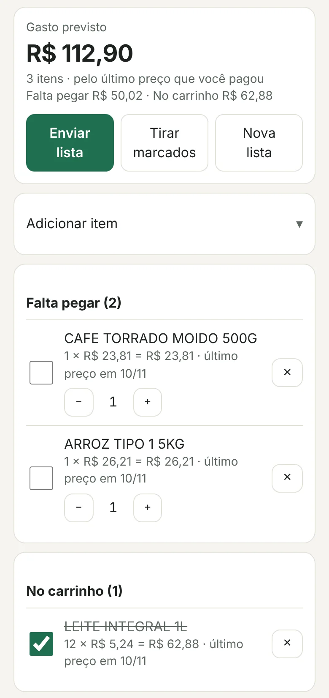
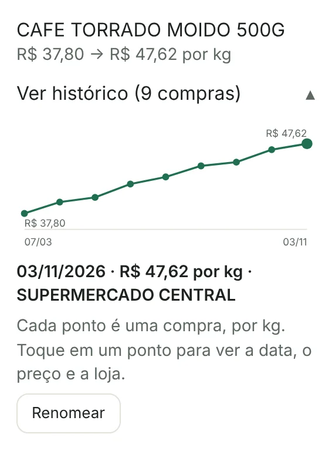
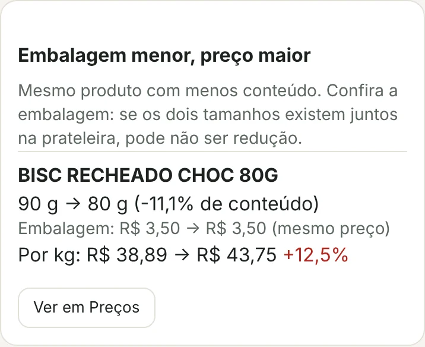
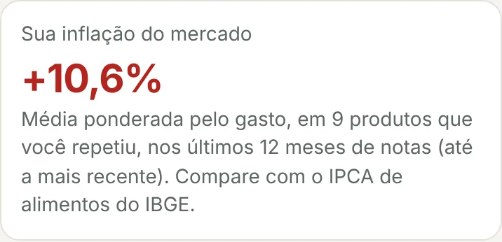
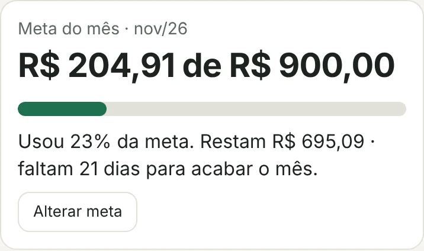

Para onde vai o seu dinheiro no mercado?
Escaneie o QR Code da nota fiscal. Em uns dez segundos, o app mostra o que subiu de preço, quanto você gasta por categoria e onde dá para cortar.
Você só precisa de uma nota de mercado com QR Code.
Sem cadastro. Dados só no seu celular.Validado com notas do Rio Grande do Sul; outros estados em teste.
Exemplo com dados fictícios. As etiquetas amarelas são o que o app acrescenta.
- Sem cadastro
- Você não cria conta, não informa e-mail nem CPF.
- Dados no seu celular
- As notas ficam guardadas no aparelho, não em um servidor.
- Em fase de testes
- Validado com notas do Rio Grande do Sul. Os outros estados ainda estão em teste.
O preço muda e ninguém avisa.
O arroz subiu? O pacote de biscoito encolheu? A resposta está nas suas notas fiscais, mas ninguém compara uma nota com a outra. O Caderninho faz isso por você, a cada compra.
Anote durante a semana, confira no mercado
Faça a lista com o que você já comprou ou com itens novos. O app estima o gasto pelo último preço que você pagou e, no mercado, você marca o que vai pegando.
A lista usa o que você já comprou, então fica útil a partir da primeira nota.

Veja o que subiu, produto por produto
O app compara cada produto com o preço que você pagou antes, por quilo ou por litro. Toque em um ponto do gráfico para ver o dia, o preço e a loja.

Descubra se o pacote encolheu
Mesmo nome, menos conteúdo, mesmo preço na etiqueta. O app avisa quando o preço por quilo subiu porque o produto ficou menor.
Pode errar quando os dois tamanhos existem juntos na prateleira. Por isso o aviso é cauteloso.

Saiba a sua inflação, não a da média
Uma média dos produtos que você repete, ponderada pelo quanto você gasta neles. Dá para comparar com o IPCA de alimentos do IBGE.

Acompanhe o mês antes que ele acabe
Defina uma meta de gasto e veja a barra encher a cada nota. Depois do dia 10, o app estima como o mês deve fechar.

Para quem controla o mercado sem planilha.
Para quem quer saber quanto gasta, o que ficou mais caro e onde dá para cortar, sem criar conta e sem digitar cada compra.
Três passos, uns dez segundos por nota
Você só precisa da nota fiscal da compra, impressa ou digital. Com a primeira nota, você vê para onde vai o dinheiro. Na segunda compra, o app já mostra o que subiu.
Pronto para ver para onde vai o seu dinheiro?
Você só precisa de uma nota de mercado com QR Code. Sem cadastro.Validado com notas do Rio Grande do Sul; outros estados em teste.
Ver como funciona, sem escanear nada Instalar na tela inicial, em 2 toquesSuas notas ficam no seu celular.
Itens, preços e categorias são guardados no próprio aparelho. Não existe conta, e o projeto não tem um servidor com as suas compras.
Para buscar a nota, o app envia o endereço do QR Code a um leitor intermediário, que abre a página pública da Secretaria da Fazenda e devolve o texto. Ele não guarda o que lê.
Se você limpar os dados do navegador ou trocar de celular, as notas somem. Por isso o app lembra você de fazer um backup em arquivo.
Instale na tela inicial
Abre mais rápido, em tela cheia, e a câmera costuma funcionar melhor.
iPhone (Safari)
- Abra caderninhodomercado.com.br no Safari.
- Toque em Compartilhar, o quadrado com uma seta para cima.
- Escolha Adicionar à Tela de Início.
- Toque em Adicionar.
Se você já usou o app no Safari e tem notas guardadas, faça um backup antes (Ajustes, Fazer backup). No ícone novo, as notas começam do zero.
Android (Chrome)
- Abra caderninhodomercado.com.br no Chrome.
- Toque no menu, os três pontinhos no canto.
- Escolha Instalar app ou Adicionar à tela inicial.
- Confirme.
Perguntas frequentes
É grátis?
Hoje, sim. O app está em fase de testes.
Funciona no meu estado?
Foi validado com notas do Rio Grande do Sul. Nos outros estados ele pode funcionar, mas ainda está em teste. Se a leitura falhar, o app deixa você colar o texto da nota e envia um relatório do problema, sem CPF, pelo menu Compartilhar.
Preciso ter notas para usar a lista?
Sim, ao menos uma. A lista sugere o que você já comprou e usa o último preço pago para estimar o gasto. Itens que você nunca comprou também podem ser anotados, com preço opcional.
O app guarda o meu CPF?
Não. Se o seu CPF estiver na nota, ele não é salvo.
Precisa de internet?
Para ler uma nota nova, sim. Para ver o que você já guardou, não: o app abre sem conexão.
E se eu trocar de celular?
As notas ficam só no aparelho. Em Ajustes, use Fazer backup para salvar um arquivo e Importar no celular novo.
Quem faz o app?
É um projeto independente, em fase de testes. Dúvidas e sugestões: caderninhodomercado@gmail.com.
Comece pela próxima nota fiscal
Sem cadastro. Seus dados ficam só no seu celular.
Ver como funciona, sem escanear nada